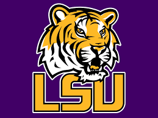
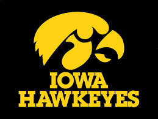
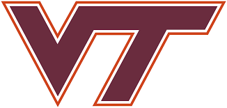

NCAA Women's Final Four Teams

The LSU Tigers women's basketball team represents Louisiana State University in Baton Rouge, Louisiana. The team competes in the Southeastern Conference (SEC) and has a long history of success, with numerous conference championships and appearances in the NCAA tournament.
LSU has had many notable players over the years, including Seimone Augustus, Sylvia Fowles, and Temeka Johnson, all of whom went on to successful careers in the WNBA. The team has also been coached by some of the most successful coaches in women's college basketball, including Van Chancellor and Pokey Chatman.

The Iowa Hawkeyes women's basketball team is the women's basketball program of the University of Iowa. The team has been competing in the Big Ten Conference since 1982 and is coached by Lisa Bluder. The Hawkeyes have made 26 NCAA tournament appearances and have advanced to the Final Four three times, in 1993, 2019, and 1990.
Some of the notable players in the history of the Iowa women's basketball program include Megan Gustafson, who was named the national player of the year in 2019 and led the Hawkeyes to their most recent Final Four appearance, and Cindy Haugejorde, who was a three-time All-American and played for Iowa from 1986 to 1990.
Overall, the Iowa women's basketball team has a strong program with a history of success, and it's no surprise they have made it to the Final Four in the past.

The South Carolina Gamecocks women's basketball team represents the University of South Carolina and competes in the Southeastern Conference (SEC). The team has a successful history and has made several appearances in the NCAA Women's Basketball Tournament, including winning the national championship in 2017.
Head coach Dawn Staley has been a driving force behind the team's success. Under her leadership, the Gamecocks have consistently been one of the top-ranked teams in the country. Staley is a former professional basketball player and has won multiple Olympic gold medals as a member of the United States women's national basketball team.
Some of the notable players who have contributed to the team's success include A'ja Wilson, who won multiple national player of the year awards and was the first overall pick in the 2018 WNBA Draft. Other key players have included Allisha Gray, Tyasha Harris, and Alaina Coates.

Virginia Tech's women's basketball team is known as the Hokies. The team competes in the Atlantic Coast Conference (ACC) and plays their home games at Cassell Coliseum in Blacksburg, Virginia. The Hokies have a history of success, including five NCAA tournament appearances and six WNIT appearances.